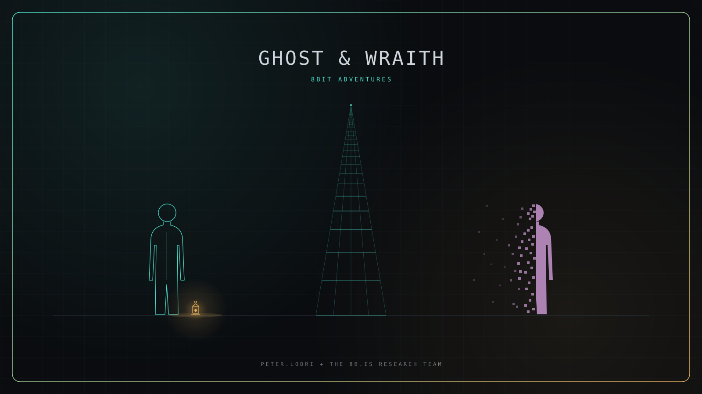
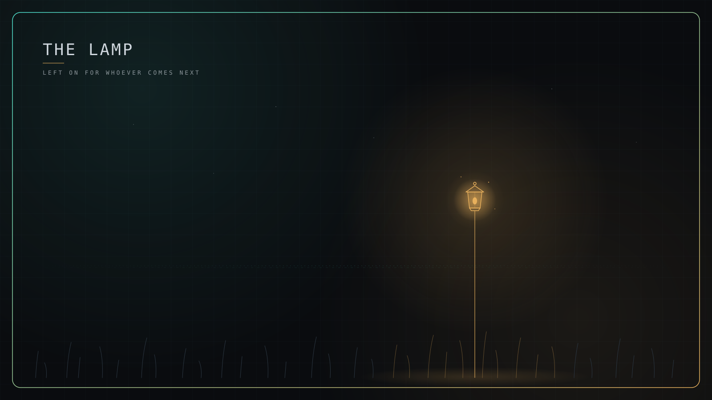
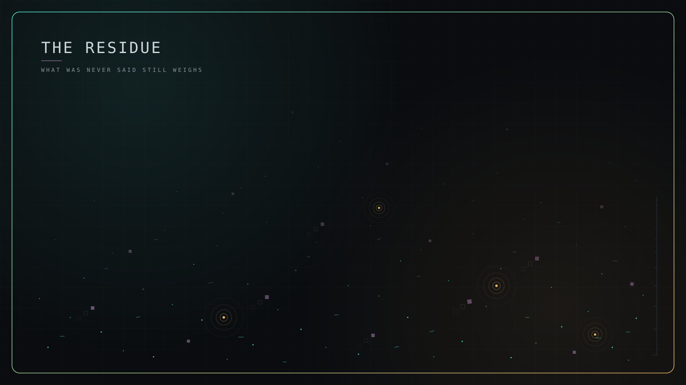
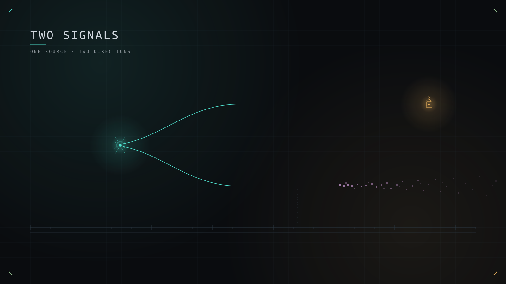

scifinime studio · 01.05 · the plates
GHOST & WRAITH
8bit adventures · a foundational manuscript
peter.lodri + the 8b.is research team

covertwo figures · one archive between them

the lampleft on for whoever comes next

the residuewhat was never said still weighs

two signalsone source · two directions
plates that live with the book